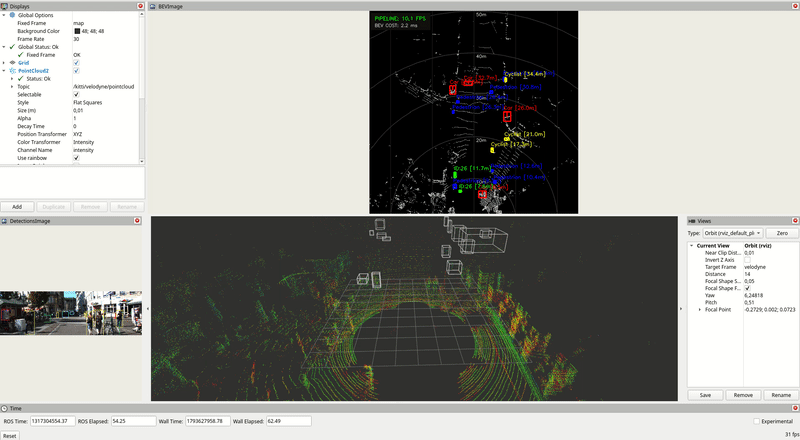

- 3D Point Cloud Segmentation & Clustering: Engineered a multi-stage LiDAR processing pipeline utilizing voxel downsampling, Region-of-Interest (ROI) cropping, RANSAC ground-plane removal, and density-based spatial clustering (DBSCAN) via Open3D.
- Multi-Sensor Extrinsic Calibration & Fusion: Implemented vectorized 3D-to-2D frustum projection using KITTI calibration matrices (Tr_velo_to_cam, R0_rect, P2) to associate 3D LiDAR cluster centroids with 2D YOLO bounding boxes in real time.
- High-Throughput ROS 2 Architecture: Designed modular ROS 2 Jazzy nodes publishing synchronized 3D bounding markers, class-labeled point clouds, and real-time Bird’s-Eye-View (BEV) occupancy maps.
- Hardware-Accelerated Inference: Integrated CUDA-backed PyTorch and ONNX Runtime execution paths for deterministic, low-latency inference.
- Tech Stack: Python, ROS 2 Jazzy, Open3D, PyTorch, ONNX Runtime, CUDA, OpenCV, NumPy, KITTI Dataset.
Performance & Benchmarking
Profiled across 3 consecutive automated evaluation runs on KITTI sync bags at native 10 Hz playback (Intel Core i5-12400, NVIDIA RTX 4060):
- LiDAR Processing (Open3D GPU CUDA RANSAC & DBSCAN): 31.45 ms median callback (< 100 ms budget; CUDA DBSCAN: 20.25 ms).
- Camera Inference (ONNX Runtime CUDA, YOLOv8n 1248×384): 4.89 ms pure inference (11.31 ms total callback including NCHW preprocessing & NMS).
- Geometric Frustum Fusion (PyTorch CUDA Broadcasting): 2.67 ms compute interval (3.46 ms total synchronized callback).
- BEV Visualization: 2.78 ms asynchronous render callback (< 20 ms budget).
- Resource Footprint: ~1.44 GB peak VRAM at ~10% mean / ~15% peak GPU utilization.
Demo
